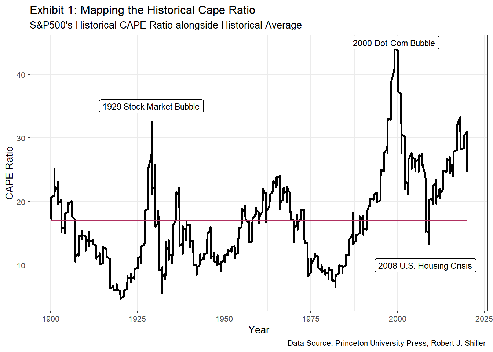
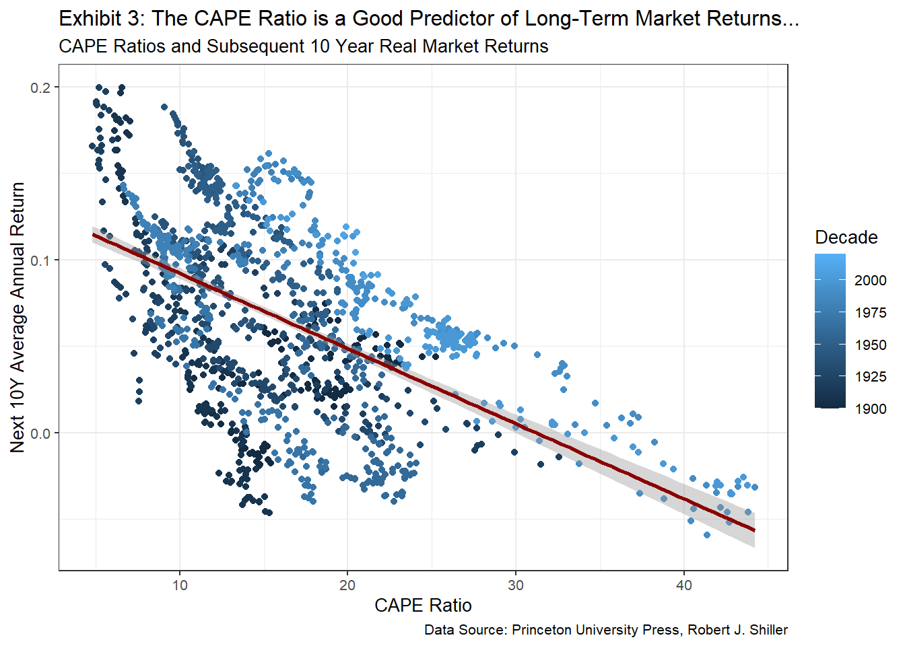
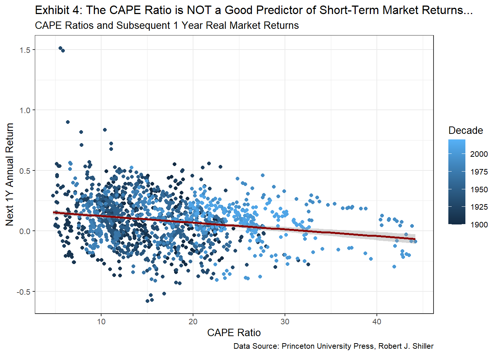
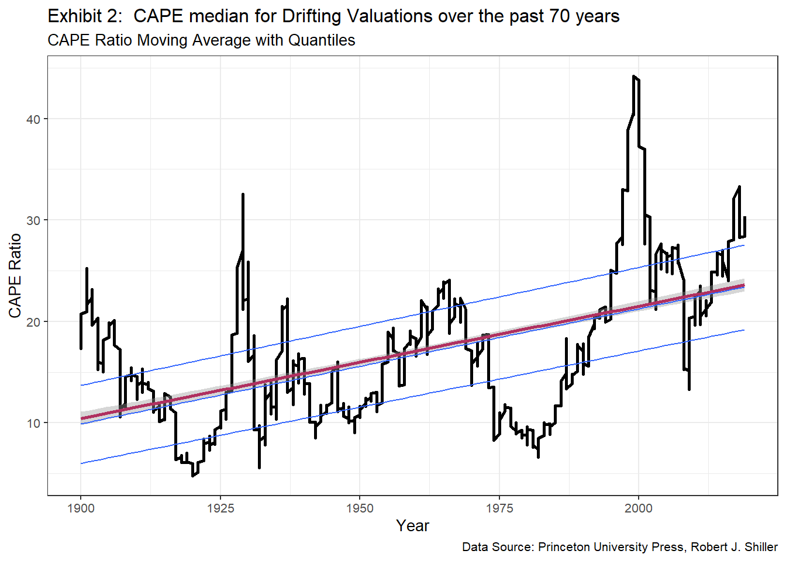
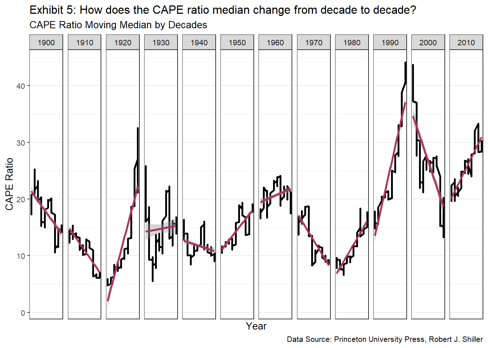
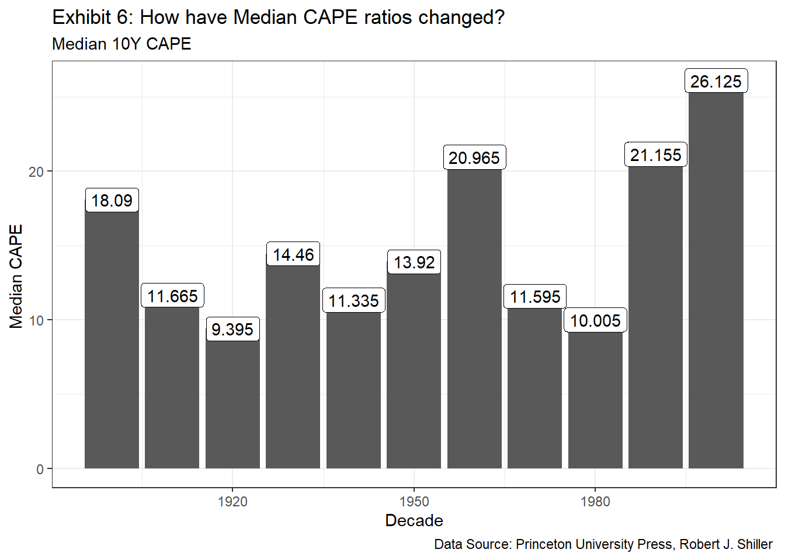
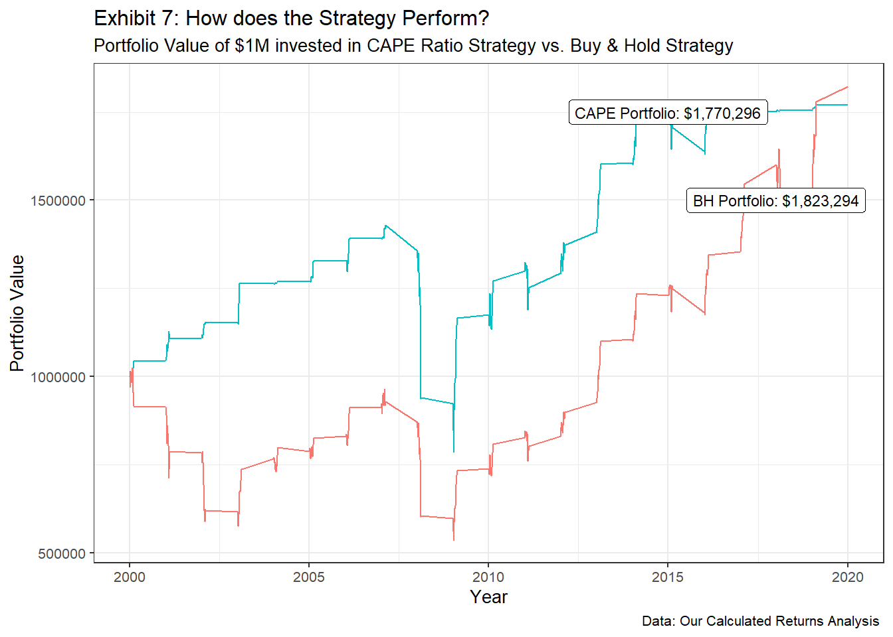

#loading all relevant library files
library(tidyverse) ## -- Attaching packages --------------------------------------- tidyverse 1.3.0 --## v ggplot2 3.3.2 v purrr 0.3.4
## v tibble 3.0.3 v dplyr 1.0.2
## v tidyr 1.1.2 v stringr 1.4.0
## v readr 1.3.1 v forcats 0.5.0## -- Conflicts ------------------------------------------ tidyverse_conflicts() --
## x dplyr::filter() masks stats::filter()
## x dplyr::lag() masks stats::lag()library(mosaic)## Loading required package: lattice## Loading required package: ggformula## Loading required package: ggstance##
## Attaching package: 'ggstance'## The following objects are masked from 'package:ggplot2':
##
## geom_errorbarh, GeomErrorbarh##
## New to ggformula? Try the tutorials:
## learnr::run_tutorial("introduction", package = "ggformula")
## learnr::run_tutorial("refining", package = "ggformula")## Loading required package: mosaicData## Loading required package: Matrix##
## Attaching package: 'Matrix'## The following objects are masked from 'package:tidyr':
##
## expand, pack, unpack## Registered S3 method overwritten by 'mosaic':
## method from
## fortify.SpatialPolygonsDataFrame ggplot2##
## The 'mosaic' package masks several functions from core packages in order to add
## additional features. The original behavior of these functions should not be affected by this.
##
## Note: If you use the Matrix package, be sure to load it BEFORE loading mosaic.
##
## Have you tried the ggformula package for your plots?##
## Attaching package: 'mosaic'## The following object is masked from 'package:Matrix':
##
## mean## The following objects are masked from 'package:dplyr':
##
## count, do, tally## The following object is masked from 'package:purrr':
##
## cross## The following object is masked from 'package:ggplot2':
##
## stat## The following objects are masked from 'package:stats':
##
## binom.test, cor, cor.test, cov, fivenum, IQR, median, prop.test,
## quantile, sd, t.test, var## The following objects are masked from 'package:base':
##
## max, mean, min, prod, range, sample, sumlibrary(ggthemes)##
## Attaching package: 'ggthemes'## The following object is masked from 'package:mosaic':
##
## theme_maplibrary(lubridate)##
## Attaching package: 'lubridate'## The following objects are masked from 'package:base':
##
## date, intersect, setdiff, unionlibrary(here)## here() starts at C:/Users/karna/Desktop/LBS/Data Science/my_websitelibrary(skimr)##
## Attaching package: 'skimr'## The following object is masked from 'package:mosaic':
##
## n_missinglibrary(janitor)##
## Attaching package: 'janitor'## The following objects are masked from 'package:stats':
##
## chisq.test, fisher.testlibrary(httr)
library(readxl)
library(vroom)
library(stringr)
library(TTR)
library(zoo)##
## Attaching package: 'zoo'## The following objects are masked from 'package:base':
##
## as.Date, as.Date.numeric# reading csv file of preliminary data
dataset <- read_csv("projectdata.csv")## Warning: Missing column names filled in: 'X25' [25]## Parsed with column specification:
## cols(
## .default = col_double(),
## `Rolling 10Y CAPE Average` = col_character()
## )## See spec(...) for full column specifications.# data cleaning on our CSV file.
dataset2 <- dataset %>%
filter(Year >= 1900 ) %>%
# cutting data before 1900
mutate( # changing months from numbers to charachters
Month = case_when(
Month == 1 ~ "January",
Month == 2 ~ "February",
Month == 3 ~ "March",
Month == 4 ~ "April",
Month == 5 ~ "May",
Month == 6 ~ "June",
Month == 7 ~ "July",
Month == 8 ~ "August",
Month == 9 ~ "September",
Month == 10 ~ "October",
Month == 11 ~ "November",
Month == 12 ~ "December"))
dataset2 # looking at data to see what it looks like## # A tibble: 1,446 x 25
## Year Decade Month Date `S&P Comp. Pric~ Dividend Earnings CPI
## <dbl> <dbl> <chr> <dbl> <dbl> <dbl> <dbl> <dbl>
## 1 1900 1900 Janu~ 1900. 6.1 0.22 0.48 7.9
## 2 1900 1900 Febr~ 1900. 6.21 0.23 0.48 7.99
## 3 1900 1900 March 1900. 6.26 0.23 0.48 7.99
## 4 1900 1900 April 1900. 6.34 0.24 0.48 7.99
## 5 1900 1900 May 1900. 6.04 0.25 0.48 7.8
## 6 1900 1900 June 1900. 5.86 0.26 0.48 7.71
## 7 1900 1900 July 1900. 5.86 0.26 0.48 7.8
## 8 1900 1900 Augu~ 1900. 5.94 0.27 0.48 7.71
## 9 1900 1900 Sept~ 1900. 5.8 0.28 0.48 7.8
## 10 1900 1900 Octo~ 1900. 6.01 0.290 0.48 7.71
## # ... with 1,436 more rows, and 17 more variables: `Monthly Inflation` <dbl>,
## # `Rolling 1Y Inflation` <dbl>, `Long Interest Rate GS10` <dbl>, `Real
## # Prices` <dbl>, `Real Dividends` <dbl>, `Real Total Return Price` <dbl>,
## # `Real Earnings` <dbl>, `BRolling Average Real Earnings` <dbl>, `Return
## # Percentage` <dbl>, `1Y FRolling Return Percentage` <dbl>, `5Y Frolling
## # Return Percentage` <dbl>, `10Y FRolling Return Percentage` <dbl>, `Real TR
## # Scaled Earnings` <dbl>, `Rolling 10Y CAPE Average` <chr>, `CAPE
## # (P/E10)` <dbl>, `TR P/E10 or TR CAPE` <dbl>, X25 <dbl># Now, we will plot the CAPE ratio to see what it looks like over the selected 70 year period.
plot_1 <- dataset2 %>% ggplot(aes(x=Date))+
geom_line(aes (y=`CAPE (P/E10)`),
color = "black",
size = 1)+
geom_line(aes (y=mean(`CAPE (P/E10)`)),
color = "maroon",
size = 1)+
labs(title = "Exhibit 1: Mapping the Historical Cape Ratio",
subtitle = "S&P500's Historical CAPE Ratio alongside Historical Average",
caption = "Data Source: Princeton University Press, Robert J. Shiller ",
y = "CAPE Ratio",
x = "Year") +
theme_bw(base_size = 10) +
geom_label(x=1999,
y=45,
label ="2000 Dot-Com Bubble",
size = 3) +
geom_label(x=1929,
y=35,
label ="1929 Stock Market Bubble",
size = 3)+
geom_label(x=2008,
y=10,
label ="2008 U.S. Housing Crisis",
size = 3)
plot_1
# We want to confirm the accuracy of the provided data by doing our own calculation on the CAPE ratio.
dataset3 <- dataset2 %>%
filter(Decade >= 1950 | Decade <= 2010) %>%
mutate(Calculated_CAPE = `Real Prices` / `BRolling Average Real Earnings`) %>%
group_by(Decade)
# summarise(Median = median(Calculated_CAPE), `CAPE (P/E10)`,`Year`, `Decade`)
dataset3## # A tibble: 1,446 x 26
## # Groups: Decade [13]
## Year Decade Month Date `S&P Comp. Pric~ Dividend Earnings CPI
## <dbl> <dbl> <chr> <dbl> <dbl> <dbl> <dbl> <dbl>
## 1 1900 1900 Janu~ 1900. 6.1 0.22 0.48 7.9
## 2 1900 1900 Febr~ 1900. 6.21 0.23 0.48 7.99
## 3 1900 1900 March 1900. 6.26 0.23 0.48 7.99
## 4 1900 1900 April 1900. 6.34 0.24 0.48 7.99
## 5 1900 1900 May 1900. 6.04 0.25 0.48 7.8
## 6 1900 1900 June 1900. 5.86 0.26 0.48 7.71
## 7 1900 1900 July 1900. 5.86 0.26 0.48 7.8
## 8 1900 1900 Augu~ 1900. 5.94 0.27 0.48 7.71
## 9 1900 1900 Sept~ 1900. 5.8 0.28 0.48 7.8
## 10 1900 1900 Octo~ 1900. 6.01 0.290 0.48 7.71
## # ... with 1,436 more rows, and 18 more variables: `Monthly Inflation` <dbl>,
## # `Rolling 1Y Inflation` <dbl>, `Long Interest Rate GS10` <dbl>, `Real
## # Prices` <dbl>, `Real Dividends` <dbl>, `Real Total Return Price` <dbl>,
## # `Real Earnings` <dbl>, `BRolling Average Real Earnings` <dbl>, `Return
## # Percentage` <dbl>, `1Y FRolling Return Percentage` <dbl>, `5Y Frolling
## # Return Percentage` <dbl>, `10Y FRolling Return Percentage` <dbl>, `Real TR
## # Scaled Earnings` <dbl>, `Rolling 10Y CAPE Average` <chr>, `CAPE
## # (P/E10)` <dbl>, `TR P/E10 or TR CAPE` <dbl>, X25 <dbl>,
## # Calculated_CAPE <dbl>#Creating graph to show Cape Ratio vs. Market Returns following 10 Years
plot_2 <-ggplot(data = dataset3, aes(x = `CAPE (P/E10)`,
y = `10Y FRolling Return Percentage`,
color = Decade)) +
geom_point() +
labs(title = "Exhibit 3: The CAPE Ratio is a Good Predictor of Long-Term Market Returns...",
subtitle = "CAPE Ratios and Subsequent 10 Year Real Market Returns",
caption = "Data Source: Princeton University Press, Robert J. Shiller",
y = "Next 10Y Average Annual Return",
x = "CAPE Ratio") +
theme_bw(base_size = 10) +
scale_x_continuous() +
scale_y_continuous() +
geom_smooth(method="lm",color = "darkred") +
guides(colour = guide_colourbar(order = 1))
plot_2## `geom_smooth()` using formula 'y ~ x'## Warning: Removed 120 rows containing non-finite values (stat_smooth).## Warning: Removed 120 rows containing missing values (geom_point).
#Creating graph to show Cape Ratio vs. Market Returns following 1 Years
plot_3 <-ggplot(data = dataset3, aes(x = `CAPE (P/E10)`,
y = `1Y FRolling Return Percentage`,
color = Decade)) +
geom_point()+
labs(title = "Exhibit 4: The CAPE Ratio is NOT a Good Predictor of Short-Term Market Returns...",
subtitle = "CAPE Ratios and Subsequent 1 Year Real Market Returns",
caption = "Data Source: Princeton University Press, Robert J. Shiller",
y = "Next 1Y Annual Return",
x = "CAPE Ratio") +
theme_bw(base_size = 10) +
scale_x_continuous() +
scale_y_continuous() +
geom_smooth(method="lm",color = "darkred")+
scale_fill_gradientn(colours = terrain.colors(6))
plot_3## `geom_smooth()` using formula 'y ~ x'## Warning: Removed 12 rows containing non-finite values (stat_smooth).## Warning: Removed 12 rows containing missing values (geom_point).
# Analyzing Median Cape Ratios to see Trends since 1950
dataset3## # A tibble: 1,446 x 26
## # Groups: Decade [13]
## Year Decade Month Date `S&P Comp. Pric~ Dividend Earnings CPI
## <dbl> <dbl> <chr> <dbl> <dbl> <dbl> <dbl> <dbl>
## 1 1900 1900 Janu~ 1900. 6.1 0.22 0.48 7.9
## 2 1900 1900 Febr~ 1900. 6.21 0.23 0.48 7.99
## 3 1900 1900 March 1900. 6.26 0.23 0.48 7.99
## 4 1900 1900 April 1900. 6.34 0.24 0.48 7.99
## 5 1900 1900 May 1900. 6.04 0.25 0.48 7.8
## 6 1900 1900 June 1900. 5.86 0.26 0.48 7.71
## 7 1900 1900 July 1900. 5.86 0.26 0.48 7.8
## 8 1900 1900 Augu~ 1900. 5.94 0.27 0.48 7.71
## 9 1900 1900 Sept~ 1900. 5.8 0.28 0.48 7.8
## 10 1900 1900 Octo~ 1900. 6.01 0.290 0.48 7.71
## # ... with 1,436 more rows, and 18 more variables: `Monthly Inflation` <dbl>,
## # `Rolling 1Y Inflation` <dbl>, `Long Interest Rate GS10` <dbl>, `Real
## # Prices` <dbl>, `Real Dividends` <dbl>, `Real Total Return Price` <dbl>,
## # `Real Earnings` <dbl>, `BRolling Average Real Earnings` <dbl>, `Return
## # Percentage` <dbl>, `1Y FRolling Return Percentage` <dbl>, `5Y Frolling
## # Return Percentage` <dbl>, `10Y FRolling Return Percentage` <dbl>, `Real TR
## # Scaled Earnings` <dbl>, `Rolling 10Y CAPE Average` <chr>, `CAPE
## # (P/E10)` <dbl>, `TR P/E10 or TR CAPE` <dbl>, X25 <dbl>,
## # Calculated_CAPE <dbl>dataset4 <- dataset3 %>%
filter(Decade <= 2010) %>%
group_by(Decade) %>%
# summarise(Max = max(`Rolling 10Y CAPE Average`),
# Min = min(`Rolling 10Y CAPE Average`),
# Median = median(`CAPE (P/E10)`)) %>%
arrange(Year)
dataset4## # A tibble: 1,440 x 26
## # Groups: Decade [12]
## Year Decade Month Date `S&P Comp. Pric~ Dividend Earnings CPI
## <dbl> <dbl> <chr> <dbl> <dbl> <dbl> <dbl> <dbl>
## 1 1900 1900 Janu~ 1900. 6.1 0.22 0.48 7.9
## 2 1900 1900 Febr~ 1900. 6.21 0.23 0.48 7.99
## 3 1900 1900 March 1900. 6.26 0.23 0.48 7.99
## 4 1900 1900 April 1900. 6.34 0.24 0.48 7.99
## 5 1900 1900 May 1900. 6.04 0.25 0.48 7.8
## 6 1900 1900 June 1900. 5.86 0.26 0.48 7.71
## 7 1900 1900 July 1900. 5.86 0.26 0.48 7.8
## 8 1900 1900 Augu~ 1900. 5.94 0.27 0.48 7.71
## 9 1900 1900 Sept~ 1900. 5.8 0.28 0.48 7.8
## 10 1900 1900 Octo~ 1900. 6.01 0.290 0.48 7.71
## # ... with 1,430 more rows, and 18 more variables: `Monthly Inflation` <dbl>,
## # `Rolling 1Y Inflation` <dbl>, `Long Interest Rate GS10` <dbl>, `Real
## # Prices` <dbl>, `Real Dividends` <dbl>, `Real Total Return Price` <dbl>,
## # `Real Earnings` <dbl>, `BRolling Average Real Earnings` <dbl>, `Return
## # Percentage` <dbl>, `1Y FRolling Return Percentage` <dbl>, `5Y Frolling
## # Return Percentage` <dbl>, `10Y FRolling Return Percentage` <dbl>, `Real TR
## # Scaled Earnings` <dbl>, `Rolling 10Y CAPE Average` <chr>, `CAPE
## # (P/E10)` <dbl>, `TR P/E10 or TR CAPE` <dbl>, X25 <dbl>,
## # Calculated_CAPE <dbl>#Moving Average Graphs
decade_graph <- ggplot(dataset4, aes(x = `Year`,y=`CAPE (P/E10)`))+
geom_line(size=1)+
geom_smooth(method="lm",
color = "maroon",
size = 1)+
geom_quantile()+
labs(title = "Exhibit 2: CAPE median for Drifting Valuations over the past 70 years",
subtitle = "CAPE Ratio Moving Average with Quantiles",
caption = "Data Source: Princeton University Press, Robert J. Shiller",
y = "CAPE Ratio",
x = "Year") +
theme_bw(base_size = 10)
decade_graph## `geom_smooth()` using formula 'y ~ x'## Smoothing formula not specified. Using: y ~ x
decade_graph2 <- ggplot(dataset4, aes(x = `Year`,y=`CAPE (P/E10)`))+
geom_line(size=1)+
geom_smooth(method="lm",
color = "maroon",
size = 1)+
facet_grid(.~Decade, scales = "free_x")+
labs(title = "Exhibit 5: How does the CAPE ratio median change from decade to decade?",
subtitle = "CAPE Ratio Moving Median by Decades",
caption = "Data Source: Princeton University Press, Robert J. Shiller",
y = "CAPE Ratio",
x = "Year") +
theme_bw(base_size = 10)+
scale_x_continuous(breaks = c())
decade_graph2## `geom_smooth()` using formula 'y ~ x'
# median CAPE ratios graph
d4 <- dataset4 %>% filter(Decade <= 2000) %>%
group_by(Decade) %>%
summarise(Median = median(`CAPE (P/E10)`)) ## `summarise()` ungrouping output (override with `.groups` argument)d4## # A tibble: 11 x 2
## Decade Median
## <dbl> <dbl>
## 1 1900 18.1
## 2 1910 11.7
## 3 1920 9.40
## 4 1930 14.5
## 5 1940 11.3
## 6 1950 13.9
## 7 1960 21.0
## 8 1970 11.6
## 9 1980 10.0
## 10 1990 21.2
## 11 2000 26.1g4 <- ggplot (d4,aes (x=`Decade`,y = `Median`)) +
geom_col()+
labs(title = "Exhibit 6: How have Median CAPE ratios changed?",
subtitle = "Median 10Y CAPE",
caption = "Data Source: Princeton University Press, Robert J. Shiller ",
y = "Median CAPE ",
x = "Decade")+
theme_bw()+
geom_label(inherit.aes = TRUE, label = d4$Median)
g4
#Returns graph
returns <- read_csv("returnsdata.csv")## Parsed with column specification:
## cols(
## Date = col_double(),
## Year = col_double(),
## Month = col_double(),
## `Buy and Hold Portfolio` = col_double(),
## `Real S&P Index` = col_double(),
## `CAPE Portfolio` = col_double(),
## `CAPE Ratio` = col_double(),
## `CAPE Median` = col_double(),
## `CAPE 3Q` = col_double(),
## `CAPE Mean` = col_double(),
## `Cape Target` = col_double()
## )returns## # A tibble: 241 x 11
## Date Year Month `Buy and Hold P~ `Real S&P Index` `CAPE Portfolio`
## <dbl> <dbl> <dbl> <dbl> <dbl> <dbl>
## 1 2000. 2000 1 1000000 2205. 1000000
## 2 2000. 2000 2 969449. 2194. 1015958.
## 3 2000. 2000 3 999426. 2125. 1001391.
## 4 2000. 2000 4 1013057. 2188. 995069.
## 5 2000. 2000 5 983213. 2216. 1010348.
## 6 2000. 2000 6 1008950. 2148. 998184.
## 7 2000. 2000 7 1015150. 2203. 995628.
## 8 2000. 2000 8 1024646. 2214. 991511.
## 9 2000. 2000 9 1008430. 2233. 999685.
## 10 2000. 2000 10 954562. 2195. 1025516.
## # ... with 231 more rows, and 5 more variables: `CAPE Ratio` <dbl>, `CAPE
## # Median` <dbl>, `CAPE 3Q` <dbl>, `CAPE Mean` <dbl>, `Cape Target` <dbl>returns_plot <- returns %>% ggplot(aes(x=Date)) +
geom_line(aes(y=`CAPE Portfolio`,
color="CAPE Portfolio"))+
geom_line(aes(y=`Buy and Hold Portfolio`,
color="Buy and Hold Portfolio"))+
# facet_grid(~Year,scales = "free_x")+
labs(title = "Exhibit 7: How does the Strategy Perform?",
subtitle = "Portfolio Value of $1M invested in CAPE Ratio Strategy vs. Buy & Hold Strategy",
caption = "Data: Our Calculated Returns Analysis ",
y = "Portfolio Value",
x = "Year") +
theme_bw(base_size = 10)+
scale_y_continuous()+
scale_x_continuous()+
geom_label(x=2015,
y=1750000,
label ="CAPE Portfolio: $1,770,296",
size = 3)+
geom_label(x=2018,
y=1500000,
label ="BH Portfolio: $1,823,294",
size = 3)+
theme(legend.position = "none")
returns_plot